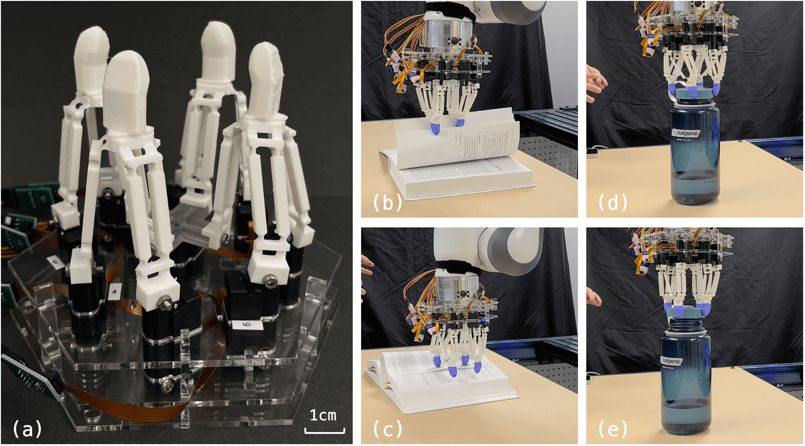
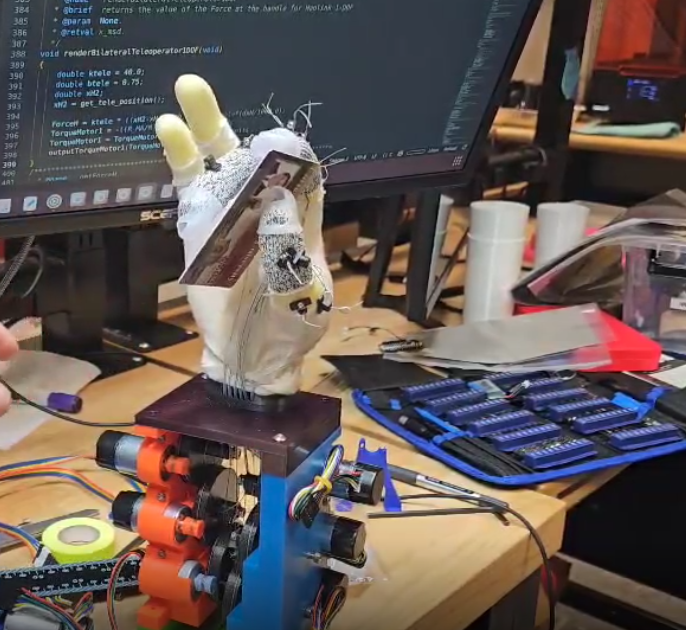

Learn how robots use advanced sensing, control, and movement to interact with the world much like the human hand.
Dexterous robotics is the field of robotics focused on creating machines that can perform precise movements and manipulate objects using advanced control systems. Dexterous robotics aims to simulate the same feeling an actual arm has down to the detail the hand has when holding objects.
Unlike simple robots that perform repetitive tasks, dexterous robots use sensors, motors, and feedback systems to adjust their movements and interact with objects in more human-like ways.

The foam hand demonstrates robotic manipulation through actuators. This process combines manufactoring with foam casting techniques. Hand built by Kwajo Burrs
